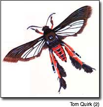
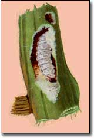

This little creature is found mostly east of a line running from the central Dakotas through Texas. So far, it does not occur west of the Rockies. Cooler climates north of the Ohio River usually allow one generation per growing season; two generations are more likely farther south.
The adult is a pretty moth (Melittia species) about 1 inch long with a wingspread of 1 1/2-inches; in its northern range, it may be only 1 1/2 inch long. The head and thorax are gray, but the abdomen is a beautiful orange with dark spots and horizontal rings. With its coloring and transparent hind wings, the adult can be mistaken for a wasp. A close look should reveal more robust antennae than the small, thin ones of a wasp. Active during the day, these moths should be easy to spot.
Adults' emergence from their pupation in the soil is timed to coincide with the sprouting runners of squash vines: early June in southern locales and late June or early July in the North. Eggs are laid on shaded parts of the stems and leaves. Larvae hatch in about a week and immediately begin boring into runner stems within the first 3 feet of the plant base. An observant gardener will notice small clusters of frass (droppings mixed with plant material) at the puncture wounds. Once inside, these caterpillars can feed on inner stems for up to six weeks. A larva can grow to an inch long and 1/4 inch in diameter. It will be cream-colored with a brown head and legs.
If the larva is discovered early and removed, the stem may well survive. To extract the larva, make a small slit in the stem and carefully remove the caterpillar. Pile dirt around the wound to encourage new roots and to help feed the far end of the stem. More generous applications of fertilizer around these rooting spots will help, too. Any dead plant material should be burned or composted to kill any remaining eggs or larvae.
A more preventive approach is to protect the base of the plant with a row cover. Remember to lift the cover regularly and check for any problems. Row covers also will interfere with insect pollination on bush-type squash; remove them when flowers start to form. If plants can be started extra early, they may be big enough to withstand some attacks by the time the borer adults emerge. Bacillus thuringiensis (Bt) will not deter these borers because they feed from inside the plant. Zucchini, and winter and Hubbard-type squash are most susceptible; melons and cukes are much less so. The insect adults are attracted to the color yellow, so a good early warning device is to set out a yellow pan of water among the plants. Moths will be found floating in the water, alerting you to their presence. - John Stuart
Mother Earth News
|
 The adult stage: a pretty moth. |
 The squash vine borer in the larvae stage, at work inside a stem. |
|